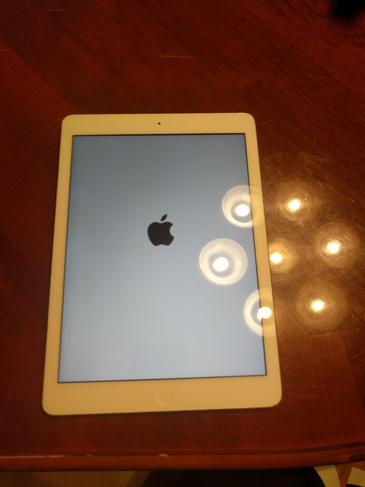
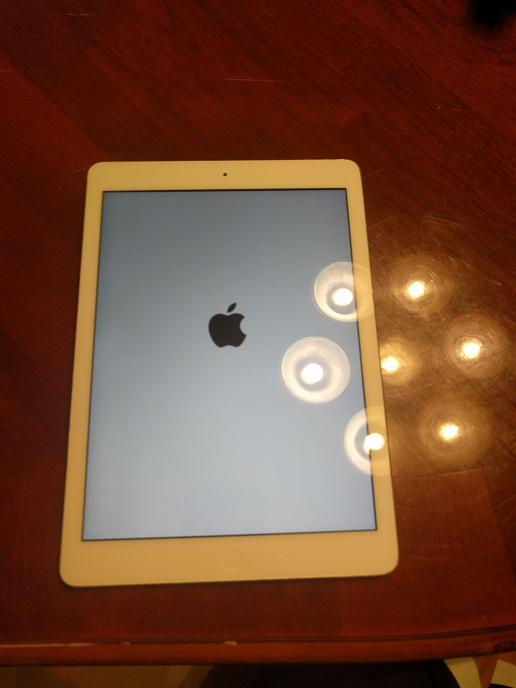

Simmons Tech Repair

7/18/20
I recently replaced the screen on a Samsung Galaxy J3. The screen had completely stopped working. Although most requests that I get are for Apple devices, I still do other products as well. Let me know if you need your phone fixed.
7/18/20
I recently replaced the battery on an iPhone 7. Devices like phones and laptops naturally lose battery capacity as they age. That can be fixed. Tell me if you need me to replace your device's battery.

6/14/20
I repaired a Nexus 6P on which the battery was failing. The battery swelled, pushing up the screen and eventually disconnecting some parts inside the phone (see pictures). A swelling battery with pressure on it is a fire hazard. That was the main cause of the Note 7 explosions in the news a few years ago. As well as being a fire hazard, a swelling battery could cause the screen to break or allow dirt to get inside the phone. Even if the screen or back isn't coming off, batteries age by losing capacity. If your phone's screen or back is coming off or doesn't hold a charge as well as it used to, the battery probably needs to be replaced. Contact me if you need me to replace your device's battery.


6/9/20
I replaced a phone's screen that had been completely shattered. There was glass dust falling out of it and turning it on would only turn on the backlight as shown in the first photo. If your phone's screen is cracked, contact me!

6/7/20
I recently replaced the battery on an iPad. The battery was swelling and stopped holding a charge as well. If your device's battery isn't lasting as long as it used to, let me know!
5/30/20
Yesterday, I reset the PIN on a laptop for someone who had forgotten it, leaving them unable to use the laptop. If you have a problem with a computer, contact me!
5/27/20
Yesterday, I fixed the screen on an iPhone 8 Plus. The screen was cracked near the bottom but I replaced it. Contact me if you need a screen replaced!


5/21/20
Yesterday, I fixed a laptop whose screen was not turning on reliably. It is now connected and working. Contact me if you have a device that is giving you problems.
5/21/20
Two days ago, I fixed a broken screen on an iPad Air 1. Everything now works perfectly. If you have a device with a broken screen, let me know!
 
